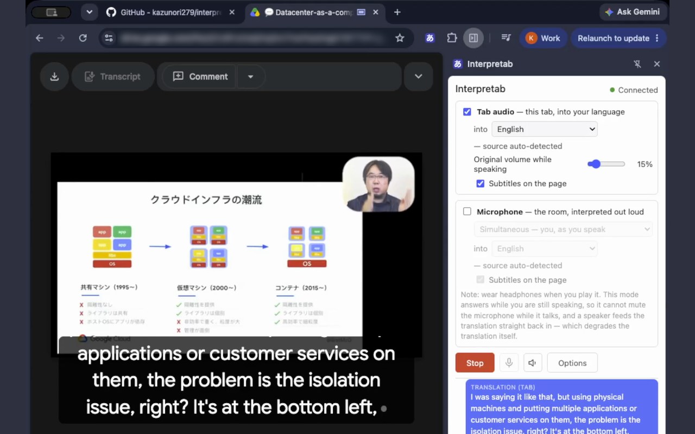

Interpretab · a Chrome extension on the Gemini Live API
Interpretab · github.com/kazunori279/interpretab
Five minutes. A Chrome extension that interprets whatever a tab is playing, and
your microphone the other way. No server: the browser holds the socket and the user's own key. Most
of the talk is about what it took to keep that socket alive for an hour.
What it does
Two directions. Either can be switched off, and both can run at once.
The source language is detected, not declared. Naming one up front is a promise a tab
cannot keep: a video cuts to a second speaker, a call hands over.
Interpretab · a personal project
The tab direction is fixed to the simultaneous model. The mic direction offers a
conversation model too, which waits for the end of a sentence and translates it better.
The three moving parts
If Web Audio, WebSockets and the Live API are new to you, this is all of it.
Interpretab · a personal project
The recorder worklet emits 128 samples at a time, 125 times a second. Wrapping each
of those in JSON would spend more bytes on the envelope than on the audio, so the session coalesces
to 32 ms frames — well under the model's own response time.
What it looks like
A Japanese talk in the tab, English out of the speakers, and the sentence on the page as it
is spoken.
The original drops to 15% under a translated voice, so the one you hear is the one you
understand.
The side panel keeps the transcript and a meter: minutes elapsed, and an estimate of what
this run has spent on your key.

Interpretab · a personal project
Subtitles live in a closed shadow root, so the page's own CSS cannot reach them. A
caption is capped at three wrapped rows and bottom-aligned, so a long sentence loses its already-read
head rather than its newest words.
Turning it on
Three steps, and one of them is picking a language.
Add to Chrome
One click from the Web Store. 220 KB zipped, no dependencies, no build
step, no account to create.
Paste an API key
Your own Gemini key, from AI Studio. It stays in the browser and is used
nowhere but Google's API.
Pick a language, Start
Click the toolbar icon on the tab you want, choose the target language, press
Start. 78 of them on the tab side.
The free tier covers a good deal of listening, and the meter says what a paid key is
spending while the run goes. It is billed to the user's own account; none of the usage rolls up to
this extension anywhere.
Interpretab · a personal project
Demo point, if there is a live tab: start on a Japanese video, then open the panel
and show the transcript filling and the meter counting.
One socket, no server
An MV3 service worker is torn down after about 30 seconds idle, and a side panel dies
when it closes; neither can hold a capture. An offscreen document outlives both, which removes the
need for any keepalive hack. It also gets chrome.runtime and nothing else: no
chrome.storage, no chrome.tabs.
Interpretab · a personal project
The missing-namespace failure is worth the war story: chrome.storage.onChanged at
module scope throws a TypeError after the listeners above it are registered, so the extension keeps
working and only the settings that should apply mid-session quietly stop.
Three AudioContexts, shared by rate
Chrome caps a document at around six AudioContexts and a per-direction layout needs
five, so they are shared by sample rate instead. ctxPass stays at the tab's native rate
on purpose: pushing 48 kHz through the 24 kHz player context resamples it down and audibly dulls
anything musical.
Interpretab · a personal project
Ducking asks "is a voice speaking right now", and model audio arrives far faster
than realtime, so the answer cannot be "did a frame just arrive". Each buffer extends a play-out
deadline by byteLength / 2 / 24000 seconds, and the gain reads that deadline plus 400 ms.
An extension that shows up as a mic
No extension can register an audio input with the system. One page is another matter.
Interpretab · a personal project
Both scripts go in under activeTab, so this adds no host permission and can only
reach the tab the run started on. Meet-only on purpose: the answer was measured against one device
picker and does not carry to Zoom or Teams without asking again.
The hard parts
Three things that fought back
A session lasts about ten minutes
The failure arrives blank
The model is a preview
Interpretab · a personal project
None of these is about translation quality. All three are about keeping a long-lived
connection honest on someone else's schedule.
A Live session lasts ten minutes
The server warns you at nine, and it means the deadline literally.
Interpretab · a personal project
Measured through tests/live-smoke.mjs: the warning arrived at 9:00 carrying "50s",
the replacement was ready 0.3 s later, and the swap fired 49.2 s after the warning. Zero server
closes across twelve minutes; the longest silence in the translated audio was 3.6 s.
The failure arrives blank
A browser is never told why a WebSocket upgrade was refused. That is deliberate.
1006, no reason
A bad key, a spent quota and a captive portal all close the same way. Telling the
page apart would make it a cross-origin oracle.
So ask over HTTP first
One GET /v1beta/models with the same key, ahead of the capture prompt.
400 is a rejected key; 401 is a key format the API declines to read as one.
1011, mid-session
A quota crossed during a run closes cleanly, carrying 123 bytes of English
cut off mid-URL. Ten retries would all connect and all die.
Both shapes came out of running against the real API rather than reasoning about it:
tests/quota-close.mjs moves the free-tier limit down to a hundred tokens, so one session
crosses it in six seconds. Retrying for ever is a bug when the answer will not change. A spent
quota comes back at midnight Pacific, not in four seconds.
Interpretab · a personal project
The verdict outlives the preflight: when the key checks out clean, a hint rides
into every session the run opens, so a later 1006 stops blaming the key — because it demonstrably is
not the key.
Two facts this build cannot own
Which Live models exist, and what they cost. A preview gets two weeks' notice; a store review takes longer than that.
Interpretab · a personal project
MV3 bans remotely hosted code and names a cached remote JSON config as a supported
pattern. The line is interpretation: a JSON document describing steps to perform is an interpreter
whatever its MIME type. Nothing here is executed, evaluated or rendered as markup.
An hour of real audio, three times
Three hour-long soaks
The session machinery reads the same on all three paths: seven
sessions, six warnings, no drift, and not one session closed by the server.
Quality tracks the language pair. The same
tab path with the pair reversed scored 92.2% over fifteen minutes.
Run
Sentences
Passed
Turn complete
Sessions
Mic, conversation model, en → ja
281
99.3%
1.60 s
7 / 6 / 0
Mic, simultaneous, en → ja
198
92.4%
0.98 s
7 / 6 / 0
Tab audio, ja → en
200
64.0%
0.23 s
7 / 6 / 0
Sessions: opened / goAway warnings / closed by the server.
tests/soak.mjs speaks synthetic sentences through the real API for an hour and has a
second model grade every translation; the full reports are in the repository.
Interpretab · a personal project
The 64% is ordinary wrong translations, not infrastructure: pass rate by ten-minute
block runs 68, 45, 62, 73, 65, 72 — noise, not decay. Japanese into English is harder for this model
than English into Japanese, and the input is synthetic speech with flat prosody.
What I would tell the next person
01
Open a real socket early. Two of the three protocol surprises here
are in no document.
02
Ask the same question over HTTP. A close code carries no reason;
a status code does.
03
Retry a flaky network, not a verdict. A spent quota comes back at
midnight, not in four seconds.
04
Keep what belongs to someone else out of the build. Model names and
prices move on their schedule.
The one that cost the most: silence is input. End-of-turn is the server's own voice
detection, and it detects it in the audio you send. Stop sending when the speaker stops, and the
model waits indefinitely.
Interpretab · a personal project
If there is time for one story, tell 04: a preview model gets two weeks' notice and
a store review takes up to several weeks, so the notice period is shorter than the fix.
A personal project. Not made, supported or
endorsed by Google. It is machine translation: it mishears, and sometimes says something the
speaker did not.
Interpretab
Open issues worth a mention if anyone asks: a local support log, and offering the
original language alongside the translation on the tab side.